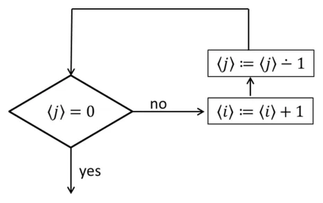

Chương 2 — Nền tảng của tính toán khả tính số
Chương 2
Nền tảng của Tính khả tính Số
Trong chương này, nền tảng của tính khả tính số được truy nguyên về tính khả tính Turing. Theo luận đề Church, khái niệm lý thuyết về máy Turing định nghĩa một thuật toán số nói chung. Về nguyên tắc, bài toán dừng của một máy Turing là không thể quyết định được. Do đó, mọi bài toán tương đương về mặt toán học đều bất khả quyết định về mặt số. Hiện thực hóa kỹ thuật của máy Turing chính là kiến trúc von Neumann của tất cả các máy tính số điều khiển bằng chương trình ngày nay. Vì vậy, các giới hạn kỹ thuật của tính khả tính được xác định bởi các giới hạn lý thuyết của chủ nghĩa hình thức toán học được giả định cho tính khả tính số.
Những cội nguồn lịch sử sơ khai của khoa học máy tính bắt nguồn từ thời đại cơ học cổ điển. Quá trình cơ giới hóa tư duy bắt đầu với việc phát minh ra các thiết bị cơ khí để thực hiện các phép tính số học cơ bản một cách tự động. Máy tính cơ học, chẳng hạn như cỗ máy do Leibniz chế tạo, thực thi các chỉ thị tuần tự từng bước một. Nhìn chung, thiết kế truyền thống của một máy tính cơ học bao gồm các bộ phận sau.
Đầu tiên, có một cơ cấu đầu vào để nhập một con số vào máy. Một cơ cấu chọn sẽ lựa chọn và cung cấp chuyển động cơ học để thực hiện phép cộng hoặc phép trừ các giá trị trên cơ cấu thanh ghi. Cơ cấu thanh ghi là cần thiết để biểu thị giá trị của một con số được lưu trữ bên trong máy, được hiện thực hóa về mặt kỹ thuật bằng một loạt các bánh xe hoặc đĩa. Nếu một số nhớ được tạo ra do một trong các chữ số trong thanh ghi kết quả tăng từ 9 lên 0, thì số nhớ đó phải được cơ cấu nhớ truyền tới chữ số tiếp theo hoặc thậm chí qua toàn bộ thanh ghi kết quả. Một cơ cấu điều khiển đảm bảo rằng
41
42 Trí tuệ Nhân tạo của Các hệ thống Phỏng thần kinh tất cả các bánh răng được định vị đúng cách vào cuối mỗi chu kỳ cộng để tránh kết quả sai hoặc làm kẹt máy. Một cơ cấu xóa phải đặt lại cơ cấu thanh ghi về giá trị lưu trữ bằng không.
Máy tính tay của Leibniz có thể dễ dàng được tổng quát hóa thành cái gọi là máy thanh ghi của Marvin Minsky (Minsky, 1961; Sheperdson và Sturgis, 1963). Nó cho phép định nghĩa khái niệm tổng quát về tính khả tính trong khoa học máy tính hiện đại.
Định nghĩa Máy Thanh ghi
Một máy tính tay chỉ có ba thanh ghi gồm cơ cấu thiết lập (đầu vào) (SM), cơ cấu quay cho tay quay, và cơ cấu kết quả (RM). Một máy thanh ghi lý tưởng có một số hữu hạn các thanh ghi có thể lưu trữ bất kỳ số lượng hữu hạn nào của một đại lượng mong muốn. Các thanh ghi được ký hiệu bằng các số tự nhiên i = 1, 2, 3, . . .. Nội dung của thanh ghi i được ký hiệu là ⟨i⟩. Ví dụ, phép gán ⟨4⟩:= 1 có nghĩa là nội dung của thanh ghi số 4 là 1. Thanh ghi là rỗng nếu nó có nội dung bằng 0.
Trong máy tính tay, phép cộng hoặc phép trừ chỉ được thực hiện cho hai thanh ghi ⟨SM⟩ và ⟨RM⟩, với ⟨SM⟩+⟨RM⟩ hoặc ⟨RM⟩−⟨SM⟩ được đưa vào thanh ghi RM. Trong một máy thanh ghi, kết quả của phép trừ ⟨i⟩−⟨j⟩ phải bằng 0 nếu ⟨j⟩ lớn hơn ⟨i⟩. Phép trừ hiệu chỉnh này được ký hiệu là ⟨i⟩.−⟨j⟩. Nhìn chung, chương trình của một máy thanh ghi lý tưởng được định nghĩa bằng cách sử dụng các thủ tục sơ cấp sau làm khối xây dựng:
(1) Cộng 1 vào ⟨i⟩ và đặt kết quả vào thanh ghi i, viết gọn là ⟨i⟩:=
⟨i⟩+ 1. (2) Trừ 1 khỏi ⟨i⟩ và đặt kết quả vào thanh ghi i, viết gọn là
⟨i⟩:= ⟨i⟩.−1.
Hai thủ tục sơ cấp này có thể được kết hợp bằng cách sử dụng các khái niệm sau:
(3) Nếu P và Q là các chương trình được định nghĩa tốt, thì chuỗi P →Q là một chương trình được định nghĩa tốt. P →Q có nghĩa là máy phải thực thi chương trình Q sau chương trình P.
Nền tảng của Tính khả tính Số 43
(4) Sự lặp lại của một chương trình, vốn cần thiết chẳng hạn cho phép nhân như một phép cộng lặp lại, được điều khiển bởi câu hỏi liệu một thanh ghi nhất định có rỗng hay không.
Sơ đồ sau đây minh họa vòng phản hồi này:

Nếu P là một chương trình được định nghĩa tốt, thì thực thi P cho đến khi nội dung của thanh ghi số i bằng không.
Ví dụ về một máy thanh ghi
Mỗi phép toán sơ cấp (1) và (2) của một chương trình được tính là một bước tính toán. Một ví dụ đơn giản là chương trình cộng sau đây:

Mỗi trạng thái của máy được minh họa bằng ma trận sau, trong đó cộng dồn nội dung y của thanh ghi ⟨j⟩ vào nội dung x của
44 Trí tuệ Nhân tạo của Các hệ thống Phỏng thần kinh thanh ghi ⟨i⟩ và đồng thời giảm nội dung của ⟨j⟩ về không. Kết quả x + y của phép cộng được hiển thị trong thanh ghi ⟨j⟩ như sau:
⟨i⟩ ⟨j⟩ x y x + 1 y .−1 ... ...
x + y y .−y
Định nghĩa Tính khả tính của Máy Thanh ghi
Một máy thanh ghi với chương trình F được định nghĩa là tính một hàm f với n đối số nếu với mọi x1, . . . , xn tùy ý trong các thanh ghi 1, . . . , n (và số không trong tất cả các thanh ghi khác), chương trình F được thực thi và dừng lại sau một số hữu hạn bước với các đối số của hàm nằm trong thanh ghi 1, . . . , n và giá trị hàm f(x1, . . . , xn) nằm trong thanh ghi n + 1.
Chương trình
⟨1⟩:= x1; . . . ; ⟨n⟩:= xn
↓
F
↓
⟨n + 1⟩:= f(x1, . . . , xn) hoạt động theo một ma trận tương ứng. Một hàm f được gọi là khả tính bởi máy thanh ghi RM (khả tính RM) nếu có một chương trình F tính f.
Số bước mà một chương trình F nhất định cần để tính một hàm f được xác định bởi chương trình đó và phụ thuộc vào các đối số của hàm. Độ phức tạp của chương trình F được đo bằng một hàm sF(x1, . . . , xn) tính số bước tính toán theo chương trình F. Đôi khi, sF(x1, . . . , xn) cũng được gọi là thước đo thời gian tính toán của chương trình F. Ví dụ, ma trận của chương trình cộng cho x + y cho thấy cần y bước sơ cấp
Nền tảng của Tính khả tính Số 45
cộng 1 và y bước sơ cấp trừ 1. Do đó, sF(x, y) = 2y.
Định nghĩa Độ phức tạp RM
Vì một hàm khả tính RM f có thể được tính bởi nhiều chương trình khác nhau, một hàm g được gọi là hàm đếm bước của f nếu có một chương trình F tính f sao cho g(x1, . . . , xn) = sF(x1, . . . , xn) với mọi đối số x1, . . . , xn. Độ phức tạp của một hàm được định nghĩa là độ phức tạp của chương trình tốt nhất tính hàm đó với số bước ít nhất.
Rõ ràng, máy thanh ghi của Minsky là một sự tổng quát hóa trực quan từ máy tính tay (theo kiểu của Leibniz). Tuy nhiên, về mặt lịch sử, một số công thức hóa máy tương đương khác đã được giới thiệu độc lập lần đầu tiên bởi Alan Turing (1936) và Emil Post (1936).
Định nghĩa Máy Turing
Một máy Turing (Hình 1) có thể thực hiện bất kỳ thủ tục hiệu quả nào miễn là nó được lập trình đúng cách. Nó bao gồm (a) một hộp điều khiển chứa một chương trình hữu hạn, (b) một băng giấy vô hạn tiềm năng, được chia theo chiều dài thành các ô vuông, (c) một thiết bị để quét hoặc in lên từng ô vuông của băng tại một thời điểm, và để di chuyển dọc theo băng hoặc dừng lại, tất cả đều dưới sự điều khiển của hộp điều khiển.

Hình 1. Một máy Turing (Mainzer, 2018, tr. 22).
46 Trí tuệ Nhân tạo của Các hệ thống Phỏng thần kinh
Nếu các ký hiệu được máy Turing sử dụng chỉ giới hạn ở một nét gạch / và một khoảng trắng *, thì một hàm khả tính RM có thể được chứng minh là khả tính bởi máy Turing và ngược lại. Chúng ta phải nhớ rằng mọi số tự nhiên x có thể được biểu diễn bằng một dãy x nét gạch (ví dụ, 3 bằng ///), với mỗi nét gạch nằm trên một ô vuông của băng Turing. Khoảng trắng * được dùng để biểu thị ô vuông đó trống (nếu số tương ứng là số không). Cụ thể, một khoảng trắng là cần thiết để phân tách các dãy nét gạch biểu diễn các con số. Do đó, một máy Turing tính một hàm f với các đối số x1, . . . , xn bắt đầu với băng · · · ∗x1 ∗x2 ∗· · · xn ∗· · · và dừng lại với · · · ∗x1 ∗x2 ∗· · · xn ∗f(x1, . . . , xn) ∗· · · trên băng. Theo quan điểm logic, một máy tính đa năng — như được chế tạo bởi các cộng sự của John von Neumann ở Mỹ và một cách độc lập bởi Konrad Zuse ở Đức — là sự hiện thực hóa kỹ thuật của một máy Turing phổ dụng có thể mô phỏng bất kỳ loại chương trình Turing nào (Herken, 1995). Tương tự, chúng ta có thể định nghĩa một máy thanh ghi phổ dụng có thể thực thi bất kỳ loại chương trình thanh ghi nào. Trên thực tế, thiết kế chung của một máy tính von Neumann bao gồm một bộ xử lý trung tâm (bộ điều khiển chương trình), một bộ nhớ, một khối số học và các thiết bị đầu vào–đầu ra. Nó hoạt động từng bước theo cách chủ yếu là tuần tự. Máy tính ngày nay (theo kiểu von Neumann) thực chất là một máy Turing tổng quát và một máy thanh ghi.
Bên cạnh máy Turing và máy thanh ghi, còn có nhiều thủ tục tương đương toán học khác để định nghĩa các hàm khả tính. Các hàm đệ quy được định nghĩa bằng các thủ tục thế hàm và lặp, bắt đầu với một số hàm sơ cấp, chẳng hạn như phép thế và phép lặp, bắt đầu với một số hàm sơ cấp (ví dụ, hàm kế tiếp n(x) = x + 1), vốn hiển nhiên là khả tính. Tất cả các định nghĩa về tính khả tính này bằng máy Turing, máy thanh ghi, hàm đệ quy, v.v., đều có thể được chứng minh là tương đương về mặt toán học. Rõ ràng, mỗi khái niệm chính xác này định nghĩa một thủ tục hiệu quả về mặt trực giác. Do đó, Alonzo Church đã đề xuất luận đề nổi tiếng của mình rằng khái niệm trực giác phi hình thức về một thủ tục hiệu quả là đồng nhất với một trong những khái niệm chính xác tương đương này, chẳng hạn như khái niệm máy Turing.
Nền tảng của Tính khả tính Số 47
Luận đề Church
Mọi thủ tục tính toán (thuật toán) đều có thể được tính bởi một máy Turing.
Tất nhiên, luận đề Church không thể được chứng minh, bởi vì các khái niệm chính xác về mặt toán học được so sánh với một khái niệm trực giác phi hình thức. Tuy nhiên, sự tương đương toán học của nhiều khái niệm chính xác về tính khả tính vốn hiệu quả về mặt trực giác đã xác nhận luận đề Church. Do đó, chúng ta có thể nói về tính khả tính, tính hiệu quả và các hàm khả tính mà không cần đề cập đến các thủ tục hiệu quả cụ thể (“thuật toán”), chẳng hạn như máy Turing, máy thanh ghi và hàm đệ quy. Theo luận đề Church, chúng ta đặc biệt có thể nói rằng mọi thủ tục tính toán (thuật toán) đều có thể được tính bởi một máy Turing. Vì vậy, mọi hàm đệ quy, như một loại chương trình máy, đều có thể được tính bởi một máy tính đa năng (Feferman, 2006).
Để chính xác hơn, hãy xem xét một lớp các hàm được chấp nhận là khả tính một cách trực giác ngay từ đầu (Kleene, 1974; Shoenfield, 1967).
Định nghĩa các Hàm Đệ quy Nguyên thủy
Lớp Fpr của các hàm đệ quy nguyên thủy được định nghĩa bởi các điều kiện sau:
(1) Z, S, pn i thuộc Fpr:
Z là hàm không với Z(x) = 0, S là hàm kế tiếp với S(x) = x + 1, pn i là hàm chiếu với pn i (x0, . . . , xn) = xi (0 ≤i ≤n).
(2) Fpr đóng dưới phép hợp:
Nếu các hàm f, gj thuộc Fpr với f: Nk →N và gj: Nn → N (1 ≤j ≤k), thì có một hàm h thuộc Fpr, thỏa mãn
⇀x) = f(g1(
⇀x), . . . , gk(
⇀x)) (với
⇀x = x1, . . . , xn).
h(
48 Trí tuệ Nhân tạo của Các hệ thống Phỏng thần kinh (3) Fpr đóng dưới phép đệ quy:
Với các hàm f: Nn →N và g: Nn+2 →N, có một hàm h thuộc Fpr sao cho
⇀x) = f(
⇀x), h(0,
⇀x). (4) Fpr là lớp nhỏ nhất thỏa mãn các điều kiện (1)–(3).
⇀x) = g(h(y,
⇀x), y, h(S(y),
Lớp các hàm đệ quy nguyên thủy có thể được mở rộng bằng một thủ tục tìm kiếm khả tính trực giác đối với các số nhỏ nhất thỏa mãn các điều kiện khả tính nhất định.
Định nghĩa các Hàm Đệ quy
Lớp Fr của các hàm đệ quy toàn phần là lớp nhỏ nhất của các hàm thỏa mãn các điều kiện (1)–(3) của Fpr (với Fr thay cho Fpr) và điều kiện sau:
(5) Fr đóng dưới phép áp dụng toán tử μ:
⇀y) = 0, với g thuộc Fr nếu tồn tại một x như vậy, hay viết hình thức là ∀y∃x(x,
⇀y) = μx(g(x,
⇀y) = 0), tức là giá trị x nhỏ nhất thỏa mãn g(x, f(
⇀y) = 0.
Đôi khi, không rõ liệu các hàm có được xác định toàn phần hay không. f(x) ≃ g(x) có nghĩa là hàm f(x) được xác định khi và chỉ khi hàm g(x) được xác định, và nếu chúng được xác định, thì giá trị của chúng bằng nhau. Bây giờ, chúng ta có thể mở rộng lớp các hàm đệ quy toàn phần thành lớp các hàm đệ quy bộ phận.
Định nghĩa các Hàm Đệ quy Bộ phận
Lớp F′
r của các hàm đệ quy bộ phận được định nghĩa bởi các điều kiện sau:
(1) Fr là một tập con của F′ r. (2) F′ r đóng dưới phép hợp: Nếu các hàm h, gj thuộc F′ r với h: Nk →N và gj: Nn → N (1 ≤j ≤k), thì có một hàm f thuộc F′ r, thỏa mãn
⇀x) ≃h(g1(
⇀x), . . . , gk(
⇀x)).
f(
Nền tảng của Tính khả tính Số 49
(3) F′ r đóng dưới phép áp dụng toán tử μ: f(
⇀y) = 0, với g thuộc Fr nếu tồn tại một x như vậy, hay viết hình thức là ∀y∃x(x,
⇀y) ≃μx(g(x,
⇀y) = 0), tức là giá trị x nhỏ nhất thỏa mãn g(x,
⇀y) = 0.
Hóa ra mọi hàm đệ quy bộ phận đều khả tính theo nghĩa của luận đề Church. Bây giờ, chúng ta có thể định nghĩa các thủ tục hiệu quả về quyết định và liệt kê, vốn đã được đòi hỏi bởi chương trình mathesis universalis của Leibniz (Davis, 1958). Hàm đặc trưng χM của một tập con M các số tự nhiên được định nghĩa là χM(x) = 1 nếu x là một phần tử của M và χM(x) = 0 trong trường hợp ngược lại.
Định nghĩa các Thủ tục Quyết định và Liệt kê Hiệu quả
Một tập hợp M được định nghĩa là khả quyết định hiệu quả nếu hàm đặc trưng của nó cho biết một số có thuộc M hay không là khả tính hiệu quả.
Các chương trình và phép tính bao gồm các danh sách ký hiệu có thể được mã hóa bằng các số tự nhiên. Khi đó, chúng ta có thể định nghĩa một vị từ khả quyết định T(x,
⇀y, z) (vị từ T của Kleene) với ý nghĩa rằng “z mã hóa một phép tính (dừng) theo chương trình x cho các đối số
⇀y”. Hàm trích xuất kết quả khả tính toàn phần U trích xuất kết quả từ mã của một phép tính dừng. Có thể chứng minh rằng mỗi hàm khả tính f với mã x của chương trình máy của nó có thể được biểu diễn như sau:
Dạng chuẩn Kleene:
⇀y) ≃U(μz χT (x,
⇀y, z) = 1) f(
⇀y, z)).
≃U(μz T(x,
⇀y) biểu thị kết quả của việc áp dụng chương trình x cho các đối số của hàm f. Thực chất, x là số mã của một chương trình máy mà cũng được gọi là “số máy” của hàm khả tính f. Rõ ràng, [x](
Biểu thức xác định bộ phận [x](
⇀y) được xác định nếu có một phép tính (dừng) z theo chương trình x cho các đối số đầu vào
⇀y:
⇀y) được xác định ↔∃z T(x,
⇀y, z).
[x](
50 Trí tuệ Nhân tạo của Các hệ thống Phỏng thần kinh
Một tập hợp M được định nghĩa là khả liệt kê hiệu quả nếu tồn tại một thủ tục hiệu quả (khả tính) f để sinh ra các phần tử của nó, lần lượt từng cái một (viết hình thức là f(1) = x1, f(2) = x2, . . . với mọi phần tử x1, x2, . . . từ M). Định nghĩa về tính khả liệt kê đệ quy có thể được tổng quát hóa từ tập hợp sang vị từ.
Định nghĩa Tính khả liệt kê Đệ quy
Một vị từ P là khả liệt kê đệ quy nếu P rỗng hoặc tồn tại một hàm đệ quy f với P(x) ↔∃yf(y) = x với mọi x.
Có thể chứng minh (Hermes, 1978) rằng với mọi vị từ khả liệt kê đệ quy P đều có một vị từ khả quyết định đệ quy Q sao cho
Định lý:
P(x) ↔∃yQ(x, y) với mọi x
Định lý cuối cùng này và dạng chuẩn Kleene giờ đây có thể được sử dụng để đặc trưng hóa các vị từ khả liệt kê đệ quy (RE) (Rogers, 1967):
Phép liệt kê của Kleene đối với các vị từ khả liệt kê đệ quy:
Giả sử P là một vị từ khả liệt kê đệ quy
P(y) ↔∃zQ(y, z), với Q đệ quy với mọi y. Định nghĩa một hàm bộ phận đệ quy f(y) ≃ μzQ(y, z) với số máy x. Khi đó,
P(y) ↔[x](y) được xác định ↔∃zT(x, y, z).
Số x được gọi là chỉ số RE của vị từ RE P. Nói một cách trực giác, vị từ T của Kleene liệt kê tất cả các vị từ RE theo chỉ số RE của chúng (Soare, 1987).
Định lý Post về Tính khả quyết định và Tính khả liệt kê
Tính khả quyết định có thể được đặc trưng bởi tính khả liệt kê: Một tập hợp hoặc vị từ là khả quyết định đệ quy nếu tập hợp hoặc vị từ đó và phần bù của nó
Nền tảng của Tính khả tính Số 51
đều là khả liệt kê đệ quy (định lý Post). Tập hợp bù ¯ M của M chứa tất cả các phần tử không thuộc M. Nếu M và ¯ M đều khả liệt kê đệ quy, thì chúng ta có thể liệt kê các phần tử của chúng từng bước một để quyết định xem một số đã cho có thuộc M hay không. Do đó, M là khả quyết định đệ quy. Theo định nghĩa, suy ra rằng mọi tập hợp khả quyết định đệ quy đều khả liệt kê đệ quy. Tuy nhiên, có những tập hợp khả liệt kê đệ quy nhưng không khả quyết định. Đây là những dấu hiệu đầu tiên cho thấy có những giới hạn đối với khuôn khổ số của tính khả tính vốn dựa trên niềm tin vào các thủ tục quyết định phổ quát.
Tại thời điểm này, bài toán dừng nổi tiếng của Turing xuất hiện: Liệu có một thủ tục quyết định phổ quát nào để xác định xem một chương trình máy tính tùy ý có dừng lại sau hữu hạn bước đối với một đầu vào tùy ý hay không? Turing đã chứng minh rằng về nguyên tắc, bài toán dừng là không thể giải được. Khi đó, tính bất toàn của Gödel (Gödel, 1931) chỉ là một hệ quả của chứng minh của Turing (Chaitin, 1998).
Turing bắt đầu chứng minh của mình với câu hỏi liệu các số thực có khả tính hay không. Một số thực như π = 3,1415926 . . . có vô số chữ số dường như được phân bố ngẫu nhiên sau dấu phẩy thập phân. Tuy nhiên, vẫn có những chương trình hữu hạn đơn giản để tính từng chữ số một với độ chính xác tăng dần của π. Theo nghĩa này, π được gọi là một số thực khả tính. Ở bước đầu tiên, Turing đã xây dựng một số thực bất khả tính.
Định nghĩa một Số Bất khả tính
Theo dạng chuẩn Kleene, một chương trình máy có thể được mã hóa bằng một số máy. Hãy tưởng tượng một danh sách tất cả các chương trình máy tính có thể có được sắp xếp theo thứ tự số máy tăng dần p1, p2, p2, . . . Nếu một chương trình tính ra một số thực có vô số chữ số sau dấu phẩy thập phân (ví dụ, π), thì chúng sẽ được viết xuống sau số hiệu chương trình tương ứng. (Phần số trước dấu phẩy thập phân được bỏ qua.) Ngược lại, sẽ có
52 Trí tuệ Nhân tạo của Các hệ thống Phỏng thần kinh một dòng trống trong danh sách như sau:
p1 −· d11d12d13d14d15d16d17 . . .
p2 −· d21d22d23d24d25d26d27 . . .
p3 −· d31d32d33d34d35d36d37 . . .
p4 p5 −· d51d52d53d54d55d56d57 . . .
...
Theo thủ tục đường chéo của Cantor, Turing đã thay đổi các chữ số được gạch chân trên đường chéo của danh sách và ghép các chữ số đã thay đổi này lại thành một số mới có dấu chấm thập phân ở phía trước như sau:
−·̸ = d11̸ = d12̸ = d13̸ = d14̸ = d15̸ = d16̸ = d17 . . .
Số mới này không thể nằm trong danh sách vì nó khác với chữ số đầu tiên của số thứ nhất sau p1, chữ số thứ hai của số thứ hai sau p2, v.v. Do đó, nó là một số thực bất khả tính. Với con số này, Turing đã thu được tính không thể giải được của bài toán dừng.
Tính Không thể Giải được của Bài toán Dừng
Nếu chúng ta có thể giải quyết bài toán dừng, thì chúng ta có thể quyết định xem chương trình máy tính thứ n có bao giờ xuất ra chữ số thứ n sau dấu phẩy thập phân hay không. Trong trường hợp này, chúng ta thực sự có thể thực hiện thủ tục đường chéo của Cantor và tính ra một số thực mà theo định nghĩa của nó, phải khác với bất kỳ số thực khả tính nào.
Tính không thể giải được của bài toán dừng đã bác bỏ bài toán Entscheidungsproblem của Hilbert. Nếu có một hệ tiên đề hình thức đầy đủ mà từ đó mọi chân lý toán học đều suy ra được, thì nó sẽ cung cấp cho chúng ta một thủ tục để quyết định xem một chương trình máy tính có bao giờ dừng lại hay không. Chúng ta chỉ cần chạy qua tất cả các chứng minh có thể cho đến khi tìm thấy một chứng minh rằng chương trình dừng, hoặc tìm thấy một chứng minh rằng nó không bao giờ dừng. Vì vậy, nếu tập tiên đề hữu hạn của Hilbert mà từ đó mọi chân lý toán học
Nền tảng của Tính khả tính Số 53
đều có thể suy ra là khả thi, thì bằng cách chạy qua tất cả các chứng minh có thể trong khi kiểm tra xem chứng minh nào đúng, chúng ta sẽ có thể quyết định xem một chương trình máy tính có dừng hay không. Điều đó là bất khả thi theo chứng minh của Turing.
Tính không thể giải được của bài toán dừng Turing không chỉ có ý nghĩa nền tảng đối với lý thuyết tính khả tính mà còn có những hệ quả sâu sắc đối với các nền tảng toán học. Một ví dụ là bài toán thứ 10 của Hilbert, cũng được chứng minh là về nguyên tắc không thể giải được do bài toán dừng của Turing. Năm 1900, David Hilbert đã yêu cầu tìm một thuật toán có thể quyết định xem cái gọi là phương trình Diophantine có nghiệm hay không. Đây là bài toán thứ 10 trong danh sách nổi tiếng gồm 23 bài toán của ông vẫn chưa có lời giải vào đầu thế kỷ 20. Các phương trình đại số chỉ liên quan đến phép nhân, phép cộng và phép lũy thừa của các số nguyên được đặt theo tên của nhà toán học Hy Lạp thế kỷ thứ 3 Diophantos thành Alexandria.
Tính Không thể Giải được của Bài toán thứ 10 của Hilbert
Năm 1970, Matijasevic và Cudnovskij từ Viện V.A. Steklov ở Leningrad cũ (St. Petersburg) đã chứng minh rằng bài toán thứ 10 của Hilbert tương đương với bài toán dừng của Turing và do đó, không thể quyết định được.
Họ đã sử dụng các kết quả của Davis, Putnam và Robinson (1961). Theo biểu diễn của Lagrange về các số tự nhiên dưới dạng tổng của bốn bình phương số nguyên, bài toán thứ 10 của Hilbert có thể được quy về sự tồn tại của nghiệm trong tập số tự nhiên.
Một vị từ D được gọi là Diophantine nếu nó có thể định nghĩa được bằng các vị từ x + y = z, x · y = z, và xy = z cùng các phép toán logic ∨ (hoặc), ∧ (và), và ∃ (lượng từ tồn tại):
D(x1, . . . , xn) ↔∃y1 . . . , yrP(x1, . . . , xn, y1, . . . , yr), với P đệ quy
↔∃y1 . . . , yrχp(x1, . . . , xn, y1, . . . , yr) = 1, với hàm đặc trưng khả tính χp là một đa thức.
Theo định lý của chúng ta về tính khả liệt kê đệ quy, suy ra rằng mọi vị từ Diophantine đều khả liệt kê đệ quy. Ngược lại, cũng có thể chứng minh rằng mọi vị từ khả liệt kê
54 Trí tuệ Nhân tạo của Các hệ thống Phỏng thần kinh đều là Diophantine. Matijasevic và Cudnovskij đã sử dụng dãy Fibonacci để định nghĩa một vị từ Diophantine thích hợp. Bài toán dừng có thể được biểu diễn bằng một vị từ khả liệt kê, nhưng không khả quyết định. Do đó, vị từ Diophantine tương ứng cũng không khả quyết định.